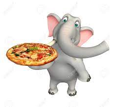
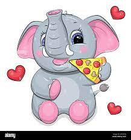
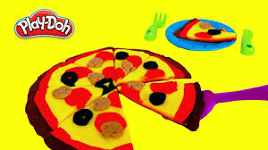

| Numar | Nume | Rasa | Poza |
|---|---|---|---|
| 1 | Elefant frumusel | Elefantul african |  |
| 2 | Elefant burtos | Elefantul asiatic |  |
| 3 | Elefant burtos | Elefantul asiatic | |
| 4 | Zebra galbena | zebra | |
| 5 | zebra rosie | zebra |  |
De cand am acest blog, dar chiar si dar chiar si inainte, cand eram cunoscut doar printre prieteni sau colegii de la birou ca fiind calator, dar si stiind ce si cum, am fost intrebat de probabil mii de ori “unde sa ma duc” – cu copiii, cu iubita, cu prietenii, unde se mananca bine, unde nu s-au dus multi si asa mai departe. Si ma bucur sa o spun ca multi dintre cei carora le-am dat sfaturi s-au intors incantati si mi-au spus ca sfaturile mele i-au ajutat. Asa ca ma gandesc sa “arunc” in articolul de fata cu idei pentru diverse categorii de calatori… Si cu niste scurte sfaturi de destinatie.
wiki